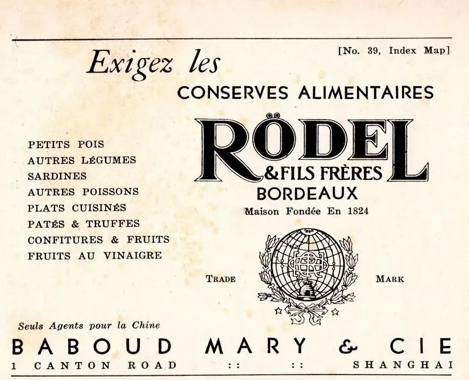

Rödel & Fils Frères · Bordeaux, 1824
The taste of Brittany.
The elegance of Bordeaux.
Sardines from the Bay of Concarneau, caught in the morning and laid in the tin by hand the same day. Since 1824.
- Packed by hand in Concarneau
- Caught and tinned the same day
- Nine fishing families of Concarneau

01 — The same process from 1824
Caught in the morning.
In the tin the same day.
Nine fishing families of Concarneau bring in the catch with the traditional bolinche, from the Bay of Concarneau, the Glénan archipelago and Cape Trévignon. Every sardine is cleaned by hand, fried for thirty seconds to seal it, and laid in the tin. Never frozen.
- Season
- May to October
- Waters
- Concarneau, Glénan
- Packed
- By hand, same day

02 — Millésime
The finest catch
of a given year.
The House of Rödel is distinguished by its selection of sardines. Millésime is a designation reserved for the finest catch of a given year, harvested at optimal maturity for exceptional richness and remarkable depth of flavour. Rödel marks on each lid when, by whom and where the fish were caught.
The full collection
Nine tins. One standard.
Millésime sardines, recipes of the house and a speciality, packed by hand in Concarneau. Professionals order by the case.
-
 Millésime · 115 g
Millésime 2025
The cornerstone of the art of preservation.
€4.20 per tin, trade
Millésime · 115 g
Millésime 2025
The cornerstone of the art of preservation.
€4.20 per tin, trade
-
 Millésime · 115 g
Millésime Boneless
Hand-boned, as once prepared for the royal court.
€4.50 per tin, trade
Millésime · 115 g
Millésime Boneless
Hand-boned, as once prepared for the royal court.
€4.50 per tin, trade
-
 Recipes of the house · 115 g
Chica Pica
A secret spice blend, and a registered trademark of the house.
€4.60 per tin, trade
Recipes of the house · 115 g
Chica Pica
A secret spice blend, and a registered trademark of the house.
€4.60 per tin, trade
-
 Recipes of the house · 115 g
Citron
Extra virgin olive oil and a whole sun-ripened lemon.
€4.40 per tin, trade
Recipes of the house · 115 g
Citron
Extra virgin olive oil and a whole sun-ripened lemon.
€4.40 per tin, trade
-
 Millésime · 69 g
Classic 1926
A 69 g tin, for those who prefer not to share.
€3.30 per tin, trade
Millésime · 69 g
Classic 1926
A 69 g tin, for those who prefer not to share.
€3.30 per tin, trade
-
 Recipes of the house · 115 g
Poivre Vert
With green peppercorns.
€4.40 per tin, trade
Recipes of the house · 115 g
Poivre Vert
With green peppercorns.
€4.40 per tin, trade
-
 Recipes of the house · 115 g
Tomate Épicée
In a spiced tomato sauce.
€4.40 per tin, trade
Recipes of the house · 115 g
Tomate Épicée
In a spiced tomato sauce.
€4.40 per tin, trade
-
 Recipes of the house · 115 g
Achards & Truffe
With achards and Tuber brumale truffle.
€5.90 per tin, trade
Recipes of the house · 115 g
Achards & Truffe
With achards and Tuber brumale truffle.
€5.90 per tin, trade
-
 Specialities · 121 g
Foie de Morue Fumé
Cod liver, smoked over beechwood.
€3.60 per tin, trade
Specialities · 121 g
Foie de Morue Fumé
Cod liver, smoked over beechwood.
€3.60 per tin, trade
04 — Since 1824
The oldest cannery brand
in the world.
In 1820 the French Admiralty asked Nicolas Appert, the inventor of preserving, to build a cannery in Bordeaux. He entrusted it to his most accomplished disciple, Charles Rödel.
- 1804Nicolas Appert opens the first cannery, in Massy.
- 1824Rödel & Fils Frères is founded in Bordeaux.
- 1872A Rödel factory opens in Concarneau.
- c. 1880The emblem: a globe paired with a beehive.
- 2025Millésime 2025, from the finest catch of the year.
From the archive
Two centuries in pictures.
- 1804

Napoleon Bonaparte, by Benjamin Robert Haydon - 1824

The only portrait of the founders - 1843–1870

Étel - 1850–1900

Sole agents for China: Baboud Mary & Cie, Shanghai - 1872

Concarneau - c. 1880

The globe and the beehive, conceived around 1880 - 1900

Plage Rödel, Concarneau, 1900 - Arcachon

Arcachon, fishermen - 2025

05 — Where to find Rödel
A name whispered
among gourmets.
Today our products are found exclusively in iconic stores, sought out by gourmets from around the world:
- La Grande Épicerie de ParisParis
- Galeries Lafayette HaussmannParis
- Gillardeau La Boutique
- Kaviari Delikatessen
- Maison Rolle, Halles de Lyon Paul BocuseLyon
- Julius Meinl am GrabenVienna
- Maison ArostéguyBiarritz
- L’Échoppe de la LuneBordeaux
- Maison JanicotSète
- Les Accords Parfaits
- Grand Marché Marnière
- Izraël
- Épicerie de Longueil
- Maison Gabriella Delicatessen
Professionals
B2B storeOrders & partnerships
george@rodel.frCannery
2 rue Henri Fabre29900 Concarneau, France
Order form
B2B order form